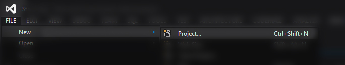
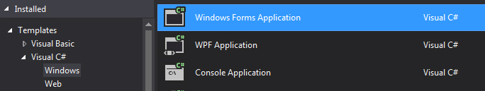
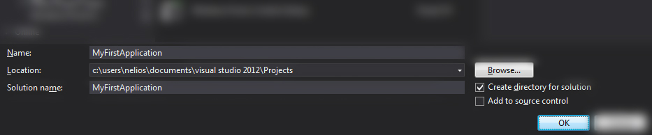
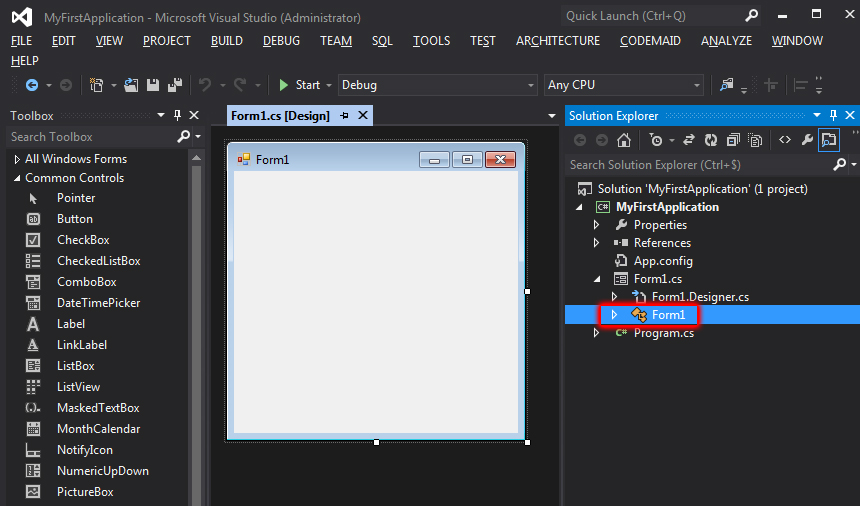

Getting started
-
What you'll learn:
- How to create a new Project.
- How to use variables.
- How to use different UI elements.
- How to make a simple calculator.
Create a new Project
First, we need to create a new Project.
Go to File > New > Project.
Select C# Windows Forms Application.
Enter a Name and a Location. We will use MyFirstApplication & Default Location. Hit OK.
Once your Project is created, you should be in Design mode and see a Form. We will take a look at that later. For now, let's open our application's code.
Extend Form1.cs & double click on Form1.
Now you should see the code below.
using System;
using System.Collections.Generic;
using System.ComponentModel;
using System.Data;
using System.Drawing;
using System.Linq;
using System.Text;
using System.Threading.Tasks;
using System.Windows.Forms;
namespace MyFirstApplication
{
public partial class Form1 : Form
{
public Form1()
{
InitializeComponent();
}
}
}
Variables
If something is not explained and you don't understand it, you should search it on Google to get informations.namespaceclassstaticfor example.
A variable is a data which your application can read, modify & use. It can be something as simple as an integer (0, 1, 2), a word (or some text) or a boolean (true or false) or something as complex as an image, a vector, etc. You can even make lists of variables...
int myInt = 1;
string myString = "My Text.";
bool myBool = false;
Place them inside a class.
using System;
using System.Collections.Generic;
using System.ComponentModel;
using System.Data;
using System.Drawing;
using System.Linq;
using System.Text;
using System.Threading.Tasks;
using System.Windows.Forms;
namespace MyFirstApplication
{
public partial class Form1 : Form
{
int myInt = 1;
string myString = "My Text.";
bool myBool = false;
public Form1()
{
InitializeComponent();
}
}
}